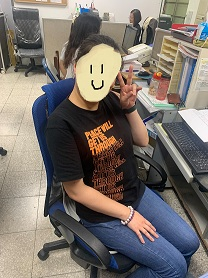

姓名：何老師
學生的介紹：
我們的綜合老師是一位非常有活力的女老師，課堂上常常會安排一些有趣的團體活動。
老師分組時不會只照著座位表分組，而是會讓我們有機會和不同同學合作，這樣的互動讓課堂變得更有意思。
老師還會根據當下的時事設計課堂內容，讓我們討論例如環保、社會福利等議題，每次討論後老師都會總結，幫助我們更清楚了解公民責任與權利。
老師的課不僅教會了我們綜合領域的知識，更讓我們對自己作為一個公民的角色有了更深的理解，也讓我更加關心身邊的社會議題。